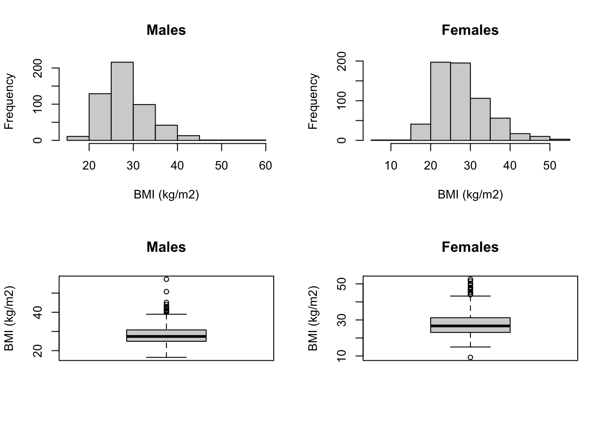

2 R notes
Importing data into R
We have described previously how to import data that have been saved as R .rds files. It is quite common to have data saved in other file types, such as Microsoft Excel, or plain text files. In this section, we will demonstrate how to import data from other packages into R.
There are two useful packages for importing data into R: haven (for data that have been saved by Stata, SAS or SPSS) and readxl (for data saved by Microsoft Excel). Additionally, the labelled package is useful in working with data that have been labelled in Stata.
Importing plain text data into R
A csv file, or a “comma separated variables” file is commonly used to store data. These files have a very simple structure: they are plain text files, where data are separated by commas. csv files have the advantage that, as they are plain text files, they can be opened by a large number of programs (such as Notepad in Windows, TextEdit in MacOS, Microsoft Excel - even Microsoft Word). While they can be opened by Microsoft Excel, they can be opened by many other programs: the csv file can be thought of as the lingua-franca of data.
In this demonstration, we will use data on the weight of 1000 people entered in a csv file called weight_s2.csv available on Moodle.
To confirm that the file is readable by any text editor, here are the first ten lines of the file, opened in Notepad on Microsoft Windows, and TextEdit on MacOS.
We can use the read.csv function:
sample <- read.csv("data/examples/Weight_s2.csv")Here, the read.csv function has the default that the first row of the dataset contains the variable names. If your data do not have column names, you can use header=FALSE in the function.
Note: there is an alternative function read_csv which is part of the readr package (a component of the tidyverse). Some would argue that the read_csv function is more appropriate to use because of an issue known as strings.as.factors. The strings.as.factors default was removed in R Version 4.0.0, so it is less important which of the two functions you use to import a .csv file. More information about this issue can be found here and here.
Checking your data for errors in R
Before you start describing and analysing your data, it is important to make sure that no errors have been made during the data entry process. Basically, you are looking for values that are outside the range of possible or plausible values for that variable.
If an error is found, the best method for correcting the error is to go back to the original data e.g. the hard copy questionnaire, to obtain the original value, entering the correct value into R If the original data is not available or the original data is also incorrect, the erroneous value is often excluded from the dataset.
For continuous variables, the easiest methods are to examine a boxplot and histogram. For example, a boxplot and histogram for the weight variable we just imported appear as:
hist(sample$weight, xlab="Weight (kg)", main="Histogram of 1000 weights")
boxplot(sample$weight, xlab="Weight (kg)", main="Boxplot of 1000 weights")
There is a clear outlying point shown in the boxplot. Although not obvious, the same point is shown in the histogram as a bar around 700 with a very short height.
We can identify any outlying observations in the dataset using the subset function. You will need to decide if these values are a data entry error or are biologically plausible. If an extreme value or “outlier”, is biologically plausible, it should be included in all analyses.
For example, to list any observations from the sample dataset with a weight larger than 200:
subset(sample, weight>200) id weight
58 58 700.2We see that there is a very high value of 700.2kg. A value as high as 700kg is likely to be a data entry error (e.g. error in entering an extra zero) and is not a plausible weight value. Here, you should check your original data.
You might find that the original weight was recorded in medical records as 70.2kg. You can change this in R by writing code.
Note: many statistical packages will allow you to view a spreadsheet version of your data and edit values in that spreadsheet. This is not best practice, as corrected observations may revert to their original values depending on whether the edited data have been saved or not. By using code-based recoding, the changes will be reproduced the next time the code is run.
We will use an ifelse statement to recode the incorrect weight of 700.2kg into 70.2kg. The form of the ifelse statement is as follows:
ifelse(test, value_if_true, value_if_false)
Our code will create a new column (called weight_clean) in the sample dataframe. We will test whether weight is equal to 700.2; if this is true, we will assign weight_clean to be 70.2, otherwise weight_clean will equal the value of weight.
Putting it all together:
sample$weight_clean = ifelse(sample$weight==700.2, 70.2, sample$weight)Note: if an extreme value lies within the range of biological plausibility it should not be removed from analysis.
Once you have checked your data for errors, you are ready to start analysing your data.
What on earth: == ?
In R, the test of equality is denoted by two equal signs: ==. So we would use == to test whether an observation is equal to a certain value. Let’s see an example:
# Test whether 6 is equal to 6
6 == 6[1] TRUE# Test whether 6 is equal to 42
6 == 42[1] FALSEYou can read the == as “is equal to”. So the code sample$weight == 700.2 is read as: “is the value of weight from the data frame sample equal to 700.2?”. In our ifelse statement above, if this condition is true, we replace weight by 70.2; if it is false, we leave weight as is.
Overlaying a Normal curve on a histogram
It can be useful to produce a histogram with an overlayed Normal curve to assess whether our sample appears approximately Normally distributed. We can do this by plotting a histogram using the hist() function. As we’re overlaying a probability distribution, we request the histogram be plotted on a probability scale, rather than a frequency scale, using probability=TRUE.
We then request a curve be overlayed using the curve() function:
the curve should be based on the Normal distribution (
dnorm);with a mean equal to the mean of the cleaned weight:
mean(sample$weight_clean));and a standard deviation equal to the standard deviation of the cleaned weight:
sd(sample$weight_clean))
using a dark-blue colour;
and added to the previous histogram (rather than plotting the curve by itself):
add=TRUE
hist(sample$weight_clean,
xlab="Weight (kg)",
main="Histogram of 1000 weights",
probability = TRUE)
curve(dnorm(x,
mean=mean(sample$weight_clean),
sd=sd(sample$weight_clean)),
col="darkblue",
add=TRUE)
Notice that the top of the curve is chopped off. We can plot the whole curve by extending the y-axis of the histogram to 0.1:
hist(sample$weight_clean,
xlab="Weight (kg)",
main="Histogram of 1000 weights",
probability = TRUE,
ylim=c(0,0.1))
curve(dnorm(x,
mean=mean(sample$weight_clean),
sd=sd(sample$weight_clean)),
col="darkblue",
add=TRUE)
Descriptive statistics for checking normality
All the descriptive statistics including skewness and kurtosis discussed in this module can be obtained using the descriptives function from the jmv package. In particular, skewness and kurtosis can be requested in addition to the default statistics by including: skew=TRUE, kurt=TRUE:
library(jmv)
descriptives(data=sample, vars=weight_clean, skew=TRUE, kurt=TRUE)
DESCRIPTIVES
Descriptives
───────────────────────────────────────
weight_clean
───────────────────────────────────────
N 1000
Missing 0
Mean 69.76450
Median 69.80000
Standard deviation 5.052676
Minimum 53.80000
Maximum 85.80000
Skewness 0.07360659
Std. error skewness 0.07734382
Kurtosis 0.05418774
Std. error kurtosis 0.1545343
─────────────────────────────────────── Importing Excel data into R
Another common type of file that data are stored in is a Microsoft Excel file (.xls or .xlsx). In this demonstration, we will import a selection of records from a large health survey, stored in the file health-survey.xlsx.
The health survey data contains 1140 records, comprising:
- sex: 1 = respondent identifies as male; 2 = respondent identifies as female
- height: height in meters
- weight: weight in kilograms
To import data from Microsoft Excel, we can use the read_excel() function in the readxl package.
library(readxl)
survey <- read_excel("data/examples/health-survey.xlsx")
summary(survey) sex height weight
Min. :1.00 Min. :1.220 Min. : 22.70
1st Qu.:1.00 1st Qu.:1.630 1st Qu.: 68.00
Median :2.00 Median :1.700 Median : 79.40
Mean :1.55 Mean :1.698 Mean : 81.19
3rd Qu.:2.00 3rd Qu.:1.780 3rd Qu.: 90.70
Max. :2.00 Max. :2.010 Max. :213.20 We can see that sex has been entered as a numeric variable. We should transform it into a factor so that we can assign labels to each category:
survey$sex <- factor(survey$sex, level=c(1,2), labels=c("Male", "Female"))
summary(survey$sex) Male Female
513 627 We also note that height looks like it has been entered as meters, and weight as kilograms.
Generating new variables
Our health survey data contains information on height and weight. We often summarise body size using BMI: body mass index which is calculated as: \(\frac{\text{weight (kg)}}{(\text{height (m)})^2}\)
We can create a new column in our data frame in many ways, such as using the following approach:
dataframe$new_column <- <formula>
For example:
survey$bmi <- survey$weight / (survey$height^2)We should check the construction of the new variable by examining some records. The head() and tail() functions list the first and last 6 records in any dataset. We can also examine a histogram and boxplot:
head(survey)# A tibble: 6 × 4
sex height weight bmi
<fct> <dbl> <dbl> <dbl>
1 Male 1.63 81.7 30.8
2 Male 1.63 68 25.6
3 Male 1.85 97.1 28.4
4 Male 1.78 89.8 28.3
5 Male 1.73 70.3 23.5
6 Female 1.57 85.7 34.8tail(survey)# A tibble: 6 × 4
sex height weight bmi
<fct> <dbl> <dbl> <dbl>
1 Female 1.65 95.7 35.2
2 Male 1.8 79.4 24.5
3 Female 1.73 83 27.7
4 Female 1.57 61.2 24.8
5 Male 1.7 73 25.3
6 Female 1.55 91.2 38.0hist(survey$bmi)
boxplot(survey$bmi)
In the general population, BMI ranges between about 15 to 30. It appears that BMI has been correctly generated in this example. We should investigate the very low and some of the very high values of BMI, but this will be left for another time.
Summarising data by another variable
We will often want to calculate the same summary statistics by another variable. For example, we might want to calculate summary statistics for BMI for males and females separately. We can do this in in the descriptives function by defining sex as a splitBy variable:
library(jmv)
descriptives(data=survey, vars=bmi, splitBy = sex)
DESCRIPTIVES
Descriptives
────────────────────────────────────────────
sex bmi
────────────────────────────────────────────
N Male 513
Female 627
Missing Male 0
Female 0
Mean Male 28.29561
Female 27.81434
Median Male 27.39592
Female 26.66667
Standard deviation Male 5.204975
Female 6.380523
Minimum Male 16.47519
Female 9.209299
Maximum Male 57.23644
Female 52.59516
──────────────────────────────────────────── Summarising a single column of data
In Module 1, we started with a very simple analysis: reading in six ages, and them using summary() to calculate descriptive statistics. We then went on to use the decriptives() function in the jmv package as more flexible way of calculating descriptive statistics. Let’s revisit this analysis:
# Author: Timothy Dobbins
# Date: 5 April 2022
# Purpose: My first R script
library(jmv)
age <- c(20, 25, 23, 29, 21, 27)
# Use "summary" to obtain descriptive statistics
summary(age) Min. 1st Qu. Median Mean 3rd Qu. Max.
20.00 21.50 24.00 24.17 26.50 29.00 # Use "descriptives" to obtain descriptive statistics
descriptives(age)Error: Argument 'data' must be a data frameThe summary() function has worked correctly, but the descriptives() function has given an error: Error: Argument 'data' must be a data frame. What on earth is going on here?
The error gives us a clue here - the descriptives() function requires a data frame for analysis. We have provided the object age: a vector. As we saw in Section @ref(data-structures), a vector is a single column of data, while a data frame is a collection of columns.
In order to summarise a vector using the descriptives() function, we must first convert the vector into a data frame using as.data.frame(). For example:
# Author: Timothy Dobbins
# Date: 5 April 2022
# Purpose: My first R script
library(jmv)
age <- c(20, 25, 23, 29, 21, 27)
# Use "summary" to obtain descriptive statistics
summary(age) Min. 1st Qu. Median Mean 3rd Qu. Max.
20.00 21.50 24.00 24.17 26.50 29.00 # Create a new data frame from the vector age:
age_df <- as.data.frame(age)
# Use "descriptives" to obtain descriptive statistics for age_df
descriptives(age_df)
DESCRIPTIVES
Descriptives
──────────────────────────────────
age
──────────────────────────────────
N 6
Missing 0
Mean 24.16667
Median 24.00000
Standard deviation 3.488075
Minimum 20.00000
Maximum 29.00000
────────────────────────────────── Plotting data by another variable
Unfortunately, it is not straight-forward to create separate plots for every level of another variable. We will demonstrate by plotting BMI by sex using our health survey data.
The following steps are not the most efficient way of doing this, but are easy to follow and understand. We first begin by creating two new data frames, for males and females separately, using the subset() function:
survey_males <- subset(survey, sex=="Male")
survey_females <- subset(survey, sex=="Female")Note that we use the label for sex, not the underlying numeric value, as sex is a factor.
We can now create hisotgrams and boxplots of BMI for males and females separately. To place the graphs next to each other in a single figure, we can use the par function, which sets the graphics parameters. Essentially, we want to tell R to split a plot window into a matrix with nr rows and nc columns, and we fill the cells by rows (mfrow) or columns (mfcols).
For example, to plot four figures in a single plot, filled by rows, we use par(mfrow=c(2,2)).
When we are done plotting multiple graphs, we can reset the graphics parameters by submitting par(mfrow=c(1,1)).
# Set the graphics parameters to plot 2 rows and 2 columns:
par(mfrow=c(2,2))
# Specify each plot separately
hist(survey_males$bmi, xlab="BMI (kg/m2)", main="Males")
hist(survey_females$bmi, xlab="BMI (kg/m2)", main="Females")
boxplot(survey_males$bmi, ylab="BMI (kg/m2)", main="Males")
boxplot(survey_females$bmi, ylab="BMI (kg/m2)", main="Females")
# Reset graphics parameters
par(mfrow=c(1,1))Recoding data
One task that is common in statistical computing is to recode variables. For example, we might want to group some categories of a categorical variable, or to present a continuous variable in a categorical way.
In this example, we can recode BMI into the following categories as suggested by the World Health Organisation [footnote]:
- Underweight: BMI < 18.5
- Normal weight: 18.5 \(\le\) BMI < 25
- Pre-obesity: 25 \(\le\) BMI < 30
- Obesity Class I: 30 \(\le\) BMI < 35
- Obesity Class II: 35 \(\le\) BMI < 40
- Obesity Class III: BMI \(\ge\) 40
The quickest way to recode a continuous variable into categories is to use the cut command which takes a continuous variable, and “cuts” it into groups based on the specified “cutpoints”
survey$bmi_cat <- cut(survey$bmi,
breaks = c(0, 18.5, 25, 30, 35, 40, 100))Notice that lower (BMI=0) and upper (BMI=100) bounds have been specified, as both a lower and upper limit must be defined for each group.
If we examine the new bmi_cat variable:
summary(survey$bmi_cat) (0,18.5] (18.5,25] (25,30] (30,35] (35,40] (40,100]
18 362 411 205 97 47 we see that each group has been labelled (a, b]. This notation is equivalent to: greater than a, and less than or equal to b. The cut function excludes the lower limit, but includes the upper limit. Our BMI ranges have been defined to include the lower limit, and exclude the upper limit (for example, greater than or equal to 30 and less than 35).
We can specify this recoding using the right=FALSE option:
survey$bmi_cat <- cut(survey$bmi,
breaks = c(0, 18.5, 25, 30, 35, 40, 100),
right=FALSE)
summary(survey$bmi_cat) [0,18.5) [18.5,25) [25,30) [30,35) [35,40) [40,100)
18 362 411 201 101 47 Finally, we can specify labels for the groups using the labels option:
survey$bmi_cat <- cut(survey$bmi,
breaks = c(0, 18.5, 25, 30, 35, 40, 100),
right=FALSE,
labels = c("Underweight", "Normal", "Pre-obesity",
"Obesity Class I", "Obesity Class II",
"Obesity Class III"))
summary(survey$bmi_cat) Underweight Normal Pre-obesity Obesity Class I
18 362 411 201
Obesity Class II Obesity Class III
101 47 Computing binomial probabilities using R
There are two R functions that we can use to calculate probabilities based on the binomial distribution: dbinom and pbinom:
dbinom(x, size, prob)gives the probability of obtainingxsuccesses fromsizetrials when the probability of a success on one trial isprob;pbinom(q, size, prob)gives the probability of obtainingqor fewer successes fromsizetrials when the probability of a success on one trial isprob;pbinom(q, size, prob, lower.tail=FALSE)gives the probability of obtaining more thanqsuccesses fromsizetrials when the probability of a success on one trial isprob.
To do the computation for part (a) in Worked Example 2.1, we will use the dbinom function with:
- x is the number of successes, here, the number of smokers (i.e. k=3);
- size is the number of trials (i.e. n=6);
- and prob is probability of drawing a smoker from the population, which is 19.8% (i.e. p=0.198).
Replace each of these with the appropriate number into the formula:
dbinom(x=3, size=6, prob=0.198)[1] 0.08008454To calculate the upper tail of probability in part (b), we use the pbinom(lower.tail=FALSE) function. Note that the pbinom(lower.tail=FALSE) function does not include q, so to obtain 4 or more successes, we need to enter q=3:
pbinom(q=3, size=6, prob=0.198, lower.tail=FALSE)[1] 0.01635325For the lower tail for part (c), we use the pbinom function:
pbinom(q=2, size=6, prob=0.198)[1] 0.9035622Computing probabilities from a Normal distribution
We can use the pnorm function to calculate probabilities from a Normal distribution:
pnorm(q, mean, sd)calculates the probability of observing a value ofqor less, from a Normal distribution with a mean ofmeanand a standard deviation ofsd. Note that ifmeanandsdare not entered, they are assumed to be 0 and 1 respectively (i.e. a standard normal distribution.)pnorm(q, mean, sd, lower.tail=FALSE)calculates the probability of observing a value of more thanq, from a Normal distribution with a mean ofmeanand a standard deviation ofsd.
To obtain the probability of obtaining 0.5 or greater from a standard normal distribution:
pnorm(0.5, lower.tail=FALSE)[1] 0.3085375To calculate the worked example: Assume that the mean diastolic blood pressure for men is 77.9 mmHg, with a standard deviation of 11. What is the probability that a man selected at random will have high blood pressure (i.e. diastolic blood pressure greater than or equal to 90)?
pnorm(90, mean=77.9, sd=11, lower.tail=FALSE)[1] 0.1356661